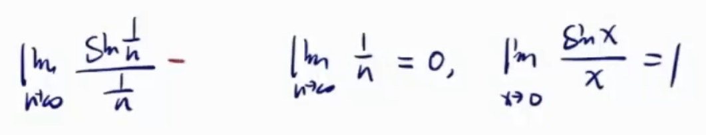
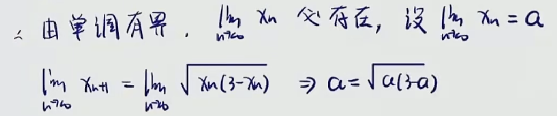
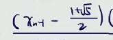

直接计算法
正弦函数在无穷远处极限振荡不存在，又正弦函数有界，考虑无穷小✖️有界
- 先裂项整理下式子
- 然后使用指对恒等变形

海涅归结原理
- 目标：化成函数极限求解

- 可以先看一下内层的这个数列它现在趋近于谁
- 假设内层这个数列趋近于
- 那我只需要算外层的这个函数，x趋近于时，外层函数的极限
外层函数的极限为a，则这个数列的极限也为a
- 


- n趋于∞时，arctan(n)趋于
- 原式极限形式为$1^{\infty}$，采用指对恒等变形的方法。
- 后面老生常谈，ln(1+x)～x，等价无穷小代换。
- 中间可以看到，出现未定式极限，即∞*0，解决方法化成形式就可以。
- 但需要注意的是，数列是不可以求导的，也就说直接洛必达不能求极限
- 这里用海涅归结原理，n趋于无穷，对应x趋于正无穷

- 这道题其实可以直接求解
- 但这里我们假设只能用海涅归结原理

- 有两种处理思路，实际下面的处理方式会更好


夹逼准则


- 两头的极限应该是一致，不一致要么放缩的不对，要么夹逼准则做不了
- 这里乍一看好像可以直接用四则拆开，最后极限加起来为0
- 但仔细想下，四则拆开的条件除了极限存在之外，还得是有限项才可以

- 左右两头极限一致，说明放缩没问题
- 乍一看，哎，夹逼准则好像可以

- 两头不一致，说明放缩出现问题
- 仔细想下，左头缩的不对，修改如下
- 再进一步思考，当n趋于无穷时，远小于
- 换句话说，一开始左头放缩过头了，缩小的太多了
- 显然，在放缩的时候特别注意大头，不要直接就砍了
- 结论：放缩时，放缩次要项


∞取整，这取不出来啊
结论，一个数如果要取整数，那么这个数小于这个数本身，大于这个数本身小一个单位

题目给出了递推关系

用单调有界准则证明数列极限存在
证明有界性
同理可得
证明单调性
- 常见的方法，做差跟0比

- 


单调有界来证明
- 通过递推关系证明有界性和单调性
- 由于题目特殊性这里直接就能得出单调有界
求极限


证明有界性
- 在草稿纸上算一下数列的极限

- 数列是单调递增的，所以a=2
- 因此数列极限为2
- 现在只要能证明2为上界
证明单调性

证明有界性

- 这里稍稍观察了下，增大了分子，得到一个不等式
证明单调性
做差

- 
- 其它部分都为正，观察这一部分
- 由于是跟一个(1.5,2)的数比较
- 而是小于2的，因而这里做差无法比较
数学归纳法
- 有兴趣可以试下做商，也证不出来


求极限